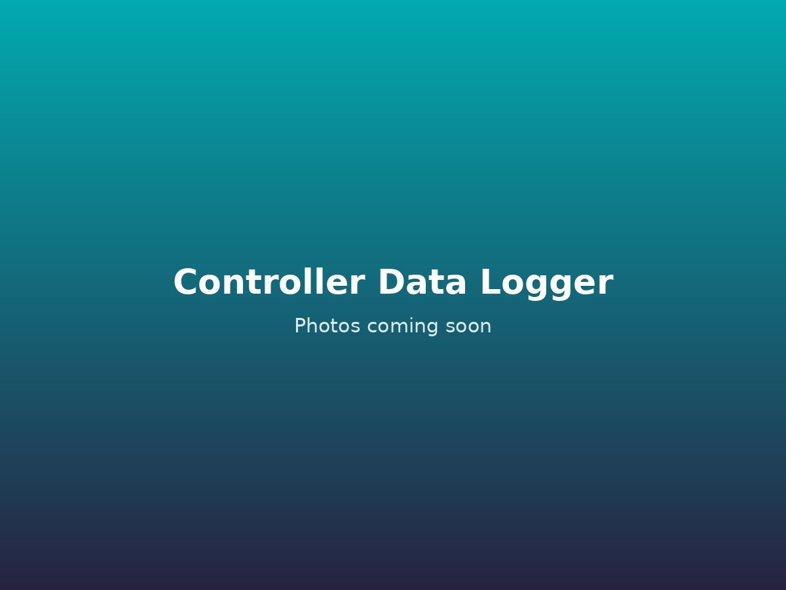

Controller Data Logger
An 8-channel data logger I’m building to figure out how an undocumented controller decides when to switch fans and compressors on and off.
- When
- 2026 – present
- My role
- Engineering intern, Heatcraft
- Tools
- Relay, temperature and pressure sensing

Overview
A third-party controller runs the fans and compressor on a refrigeration system, but its switching logic isn’t documented and the source code isn’t available. To understand it, I’m building a logger that records what the controller does alongside what the system is doing.
What I’m doing
- Building an 8-channel logger that records relay states, temperatures and pressures with timestamps.
- Lining up when each fan and compressor switches against the process data, to work out the rules the controller follows.
Status
In progress. I’ll add results and photos as the project moves forward.